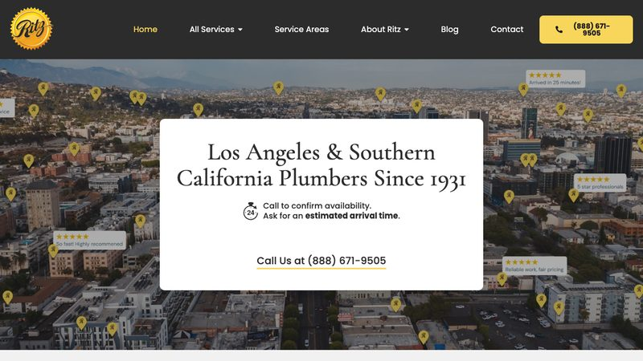
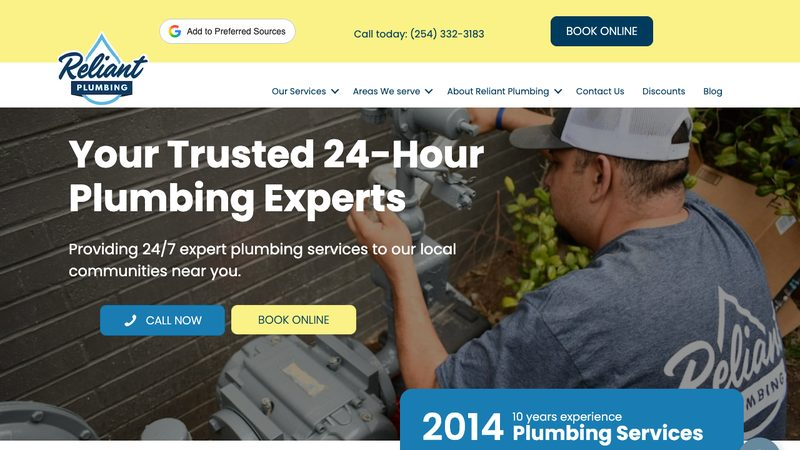

Emergency-first websites that make the phone number impossible to miss. 3 real, live plumbing websites, reviewed and critiqued. Third-party sites — not our clients.
Edwards Plumbing
Phoenix (Gilbert), AZ · https://www.edwardsplumbingllc.com/ · loads in 0.95s

Why it is here: Shows its Arizona contractor license (ROC #299613) and a “Cities We Serve” page in the footer.
What it does well
- 24/7 emergency service is stated in the hero and again in the footer, so a panicked homeowner sees it immediately.
- The phone number is a tap-to-call link repeated across the header, hero and footer.
- Names the exact area it serves (Gilbert, San Tan Valley and the Phoenix metro) in plain text, which helps local search.
What could be better
- The homepage has no H1 heading — the page title is an image, which is a missed SEO opportunity.
- The footer still reads “© 2024 Ethical Plumbing”, a template leftover that looks sloppy.
Ritz Plumbing
Los Angeles, CA · https://ritzplumbing.com/ · loads in 1.23s

Why it is here: Has a booking form with a zip-code field right in the hero, so visitors can request a visit without calling.
What it does well
- “Since 1931” is in the H1 and meta description — a strong trust signal for an old trades business.
- The hero pairs the booking form with a tap-to-call number, covering both online and phone visitors.
- A dedicated Service Areas page lists the cities it covers, which is good for local SEO.
What could be better
- No prices or financing are mentioned anywhere, which is unusual for a large plumbing company.
- The homepage is short on visible review proof (no rating count or review schema in the HTML).
Reliant Plumbing
Austin, TX · https://reliantplumbing.com/ · loads in 1.35s

Why it is here: Lists seven real office addresses and phone numbers in the footer (Austin, San Antonio, Georgetown, Temple, Waco, Fort Worth, Dallas).
What it does well
- The hero headline “Your Trusted 24-Hour Plumbing Experts” plus Call Now and Book Online buttons cover the two main conversion paths.
- A discounts-and-coupons section gives price-sensitive customers a reason to book.
- Multiple locations with local phone numbers build trust across a wide service area.
What could be better
- There is no booking form on the homepage — the Book Online button points to a separate flow, and no form fields are embedded.
- No review rating or count is visible in the page HTML.
Want a plumbing website like these?
Our template pack includes a ready-to-edit plumbing template with tap-to-call, service area, FAQ, contact form and LocalBusiness schema — plus nine other trades.
Get the 10-template pack for $49
Or start with the free guides.
← All examples by trade